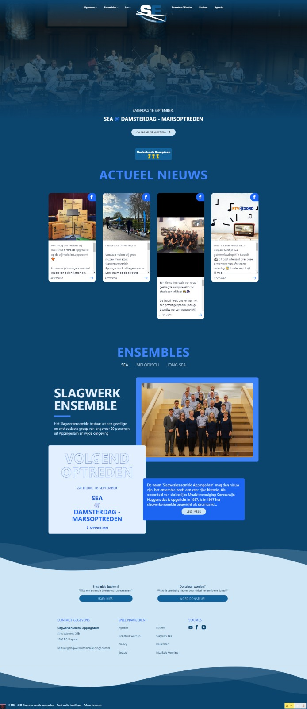
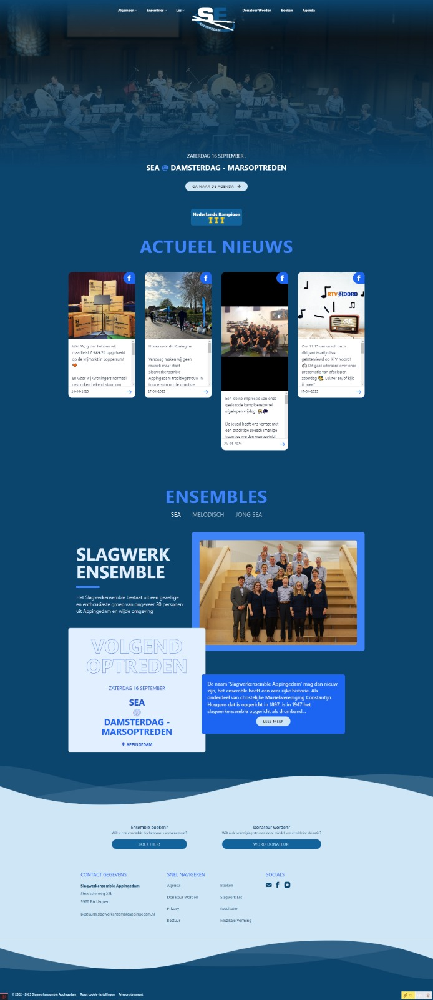

Ik heb voor het Slagwerkensemble Appingedam een website gebouwd door middel van Statamic (CMS) en TailwindCSS (CSS Framework). Ook heb ik gebruik gemaakt van PHP en AlpineJS (JavaScript).
Slagwerkensemble Appingedam & Dominic.
De website is te vinden op slagwerkensembleappingedam.nl.
Inhoudsopgave:
Werkwijze
1. Als eerst ben ik begonnen met het uitdenken hoe de website er een beetje uit moest zien en wat er
allemaal op moest komen te staan.
Door de oude website van het Slagwerkensemble Appingedam (SEA) te bekijken kwam ik er achter wat de
belangrijkste punten waren waar bezoekers naar op zoek waren.
Dit waren de volgende punten:
2. Vervolgens ben ik websites van andere verenigingen gaan bekijken om inspiratie op te doen. Zo ben ik op de website van K&G Leiden gekomen. Deze website sprak mij erg aan en heb ik als voorbeeld gebruikt voor de eerste variant van de website van SEA.
Hier is een afbeelding van de eerste variant van de website:
Echter was ik niet tevreden met deze versie. Ik vond het er niet professioneel uitzien en het was niet overzichtelijk, het was super wit en het idee van de bewegende foto's leidde super veel af. Daarom ben ik opnieuw begonnen met het ontwerpen van de website.
3. Ik begon opnieuw aan het ontwerpen van de website. De website moest er professioneel uitzien en er moest meer kleur bij betrokken worden. Ook moest de website overzichtelijker worden. De klant was het met mij eens en vond het een goed idee om opnieuw te beginnen.
Deze variant zal meer kleur bevatten en zal wat abstractere vormen bevatten. Ik begon met een aantal duidelijke verschillende kleuren en had de vraag bij de klant neergelegd of deze met een huis style qua kleuren kwam. Ik koos er hiet ook voor om de punten uit stap 1 te verwerken in de hoofdpagina van de website. Dit keer heb ik geen gebruik gemaakt van een voorbeeld website.
Hier is een afbeelding van de tweede variant van de website:
4. Deze variant was al een stuk beter dan de eerste variant. De klant was het hier ook mee eens en was het eens met de manier van verwerken van de verschillende punten. Ik vond zelf dat de website eigenlijk nog te wit was en dat de hero verre van mooi was. Deze variant heb ik bewaard en ben ik verder mee gaan bouwen. Ik koos er bij versie 3 voor om de achtergrond aan ta passen naar de huiskleur en de tekst wit te maken.
Ook koos ik er voor om een gradient te gaan gebruiken op de hero. Dit zorgde er voor dat de hero er beter uit kwam en dat het beeld die je kreeg als je de website opende een stuk beter was. Het zag er een stuk professioneler uit. Daarnaast heb ik het logo die in de header stond aangepast naar een witte variant. Dit zorgde er voor dat de header een stuk rustiger werd. En dat het logo duidelijker zichtbaar was.
Tevens kreeg ik het gevoel dat ik de agenda beter uit kon lichten. Dit heb ik gedaan door van de agenda het evenement te laten zien dat het dichtst bij vandaag is. Dit zorgt er voor dat de bezoeker direct ziet wat er binnenkort op de planning staat. De agenda heb ik verwerkt in de hero. Dit zorgde voor een mooiere verwerking van de agenda.
Hier is een afbeelding van de hero van de derde variant van de website:
5. De klant was het eens met de derde variant van de website. Ik ben verder gegaan met het bouwen van de website met deze style. Zo heb ik ook het kopje voor het nieuws aangepakt en mooier verwerkt. Door dat de klant al het nieuws op facebook deelt en het de klant een hoop tijd zou schelen heb ik gekozen om gebruik te maken van de Facebook Graph API. Hierdoor kan de klant het nieuws op facebook plaatsen en wordt het automatisch op de website geplaatst. Dit zorgt er voor dat de klant geen dubbel werk hoeft te doen en dat de website altijd up-to-date is. Dit idee beviel goed en ik ben bezig gegaan met het verwerken van de Facebook Graph API. Dit was een hele klus en heeft mij veel tijd gekost. Echter was het resultaat het waard. De klant was erg tevreden met het resultaat en was blij dat het nieuws automatisch op de website geplaatst werd.
Hier is een afbeelding van de nieuws pagina van de derde variant van de website:
6. Na het aanpakken van het nieuws gedeelte ben ik verder gegaan met het ontwerpen van de informatie over de verschillende ensembles. Ik koos er voor om een klein gedeelte van de belangrijkste informatie op de landingspagina te verwerken en de rest in een aparte pagina. Hierdoor kreeg de bezoeker gelijk de juiste informatie waar die naar op zoek was en kon die daarna meer informatie vinden op de aparte pagina als die daar interesse in had.
Voor dit gedeelte heb ik op verschillende websites inspiratie opgedaan. Uiteindelijk kwam ik op de website van Donar uit. Deze website had een mooie manier van het weergeven van de informatie over de verschillende competities. Dit heb ik gebruikt als inspiratie voor het weergeven van de informatie over de verschillende ensembles.
Hier is een afbeelding van de informatie over de ensembles van de derde variant van de website:
Het lastige aan dit gedeelte was om het responsive te maken. Dit was een best een opgave en kostte redelijk wat tijd vergeleken met de rest van de website.
7. Na het aanpakken van de informatie over de ensembles ben ik verder gegaan met het aanpakken van de footer van de website. Hier koos ik er voor om een andere kleur achtergrond te gebruiken, iets wat de website wat variatie gaf. Daarnaast heb ik het wat golf-achtige vormen gegeven, dit met de reden om de footer er wat uit ta laten komen en de overgang van donker naar licht wat soepeler te laten verlopen.
Van deze variant heb ik helaas geen afbeelding.
8. Ik ben verder gegaan met het maken van de losse pagina's, echter zijn deze pagina's enkel tekstuele pagina's en zijn deze niet heel interessant om te laten zien. Ik heb er voor gekozen om deze pagina's niet te laten zien. Mocht u ze wel willen zien kunt u de website altijd bezoeken.
Dit waren de volgende punten:
- Agenda
- Nieuws
- Slagwerkles
- Informatie betreffende de ensembles
- Het boeken van een ensemble
- Contact
2. Vervolgens ben ik websites van andere verenigingen gaan bekijken om inspiratie op te doen. Zo ben ik op de website van K&G Leiden gekomen. Deze website sprak mij erg aan en heb ik als voorbeeld gebruikt voor de eerste variant van de website van SEA.
Hier is een afbeelding van de eerste variant van de website:
Echter was ik niet tevreden met deze versie. Ik vond het er niet professioneel uitzien en het was niet overzichtelijk, het was super wit en het idee van de bewegende foto's leidde super veel af. Daarom ben ik opnieuw begonnen met het ontwerpen van de website.
3. Ik begon opnieuw aan het ontwerpen van de website. De website moest er professioneel uitzien en er moest meer kleur bij betrokken worden. Ook moest de website overzichtelijker worden. De klant was het met mij eens en vond het een goed idee om opnieuw te beginnen.
Deze variant zal meer kleur bevatten en zal wat abstractere vormen bevatten. Ik begon met een aantal duidelijke verschillende kleuren en had de vraag bij de klant neergelegd of deze met een huis style qua kleuren kwam. Ik koos er hiet ook voor om de punten uit stap 1 te verwerken in de hoofdpagina van de website. Dit keer heb ik geen gebruik gemaakt van een voorbeeld website.
Hier is een afbeelding van de tweede variant van de website:
4. Deze variant was al een stuk beter dan de eerste variant. De klant was het hier ook mee eens en was het eens met de manier van verwerken van de verschillende punten. Ik vond zelf dat de website eigenlijk nog te wit was en dat de hero verre van mooi was. Deze variant heb ik bewaard en ben ik verder mee gaan bouwen. Ik koos er bij versie 3 voor om de achtergrond aan ta passen naar de huiskleur en de tekst wit te maken.
Ook koos ik er voor om een gradient te gaan gebruiken op de hero. Dit zorgde er voor dat de hero er beter uit kwam en dat het beeld die je kreeg als je de website opende een stuk beter was. Het zag er een stuk professioneler uit. Daarnaast heb ik het logo die in de header stond aangepast naar een witte variant. Dit zorgde er voor dat de header een stuk rustiger werd. En dat het logo duidelijker zichtbaar was.
Tevens kreeg ik het gevoel dat ik de agenda beter uit kon lichten. Dit heb ik gedaan door van de agenda het evenement te laten zien dat het dichtst bij vandaag is. Dit zorgt er voor dat de bezoeker direct ziet wat er binnenkort op de planning staat. De agenda heb ik verwerkt in de hero. Dit zorgde voor een mooiere verwerking van de agenda.
Hier is een afbeelding van de hero van de derde variant van de website:
5. De klant was het eens met de derde variant van de website. Ik ben verder gegaan met het bouwen van de website met deze style. Zo heb ik ook het kopje voor het nieuws aangepakt en mooier verwerkt. Door dat de klant al het nieuws op facebook deelt en het de klant een hoop tijd zou schelen heb ik gekozen om gebruik te maken van de Facebook Graph API. Hierdoor kan de klant het nieuws op facebook plaatsen en wordt het automatisch op de website geplaatst. Dit zorgt er voor dat de klant geen dubbel werk hoeft te doen en dat de website altijd up-to-date is. Dit idee beviel goed en ik ben bezig gegaan met het verwerken van de Facebook Graph API. Dit was een hele klus en heeft mij veel tijd gekost. Echter was het resultaat het waard. De klant was erg tevreden met het resultaat en was blij dat het nieuws automatisch op de website geplaatst werd.
Hier is een afbeelding van de nieuws pagina van de derde variant van de website:
6. Na het aanpakken van het nieuws gedeelte ben ik verder gegaan met het ontwerpen van de informatie over de verschillende ensembles. Ik koos er voor om een klein gedeelte van de belangrijkste informatie op de landingspagina te verwerken en de rest in een aparte pagina. Hierdoor kreeg de bezoeker gelijk de juiste informatie waar die naar op zoek was en kon die daarna meer informatie vinden op de aparte pagina als die daar interesse in had.
Voor dit gedeelte heb ik op verschillende websites inspiratie opgedaan. Uiteindelijk kwam ik op de website van Donar uit. Deze website had een mooie manier van het weergeven van de informatie over de verschillende competities. Dit heb ik gebruikt als inspiratie voor het weergeven van de informatie over de verschillende ensembles.
Hier is een afbeelding van de informatie over de ensembles van de derde variant van de website:
Het lastige aan dit gedeelte was om het responsive te maken. Dit was een best een opgave en kostte redelijk wat tijd vergeleken met de rest van de website.
7. Na het aanpakken van de informatie over de ensembles ben ik verder gegaan met het aanpakken van de footer van de website. Hier koos ik er voor om een andere kleur achtergrond te gebruiken, iets wat de website wat variatie gaf. Daarnaast heb ik het wat golf-achtige vormen gegeven, dit met de reden om de footer er wat uit ta laten komen en de overgang van donker naar licht wat soepeler te laten verlopen.
Van deze variant heb ik helaas geen afbeelding.
8. Ik ben verder gegaan met het maken van de losse pagina's, echter zijn deze pagina's enkel tekstuele pagina's en zijn deze niet heel interessant om te laten zien. Ik heb er voor gekozen om deze pagina's niet te laten zien. Mocht u ze wel willen zien kunt u de website altijd bezoeken.
Tussenstand
Na dat ik alle pagina's had gemaakt en de website responsive had gemaakt liet ik het de klant zien.
Hier is het resultaat van de 3e variant van de website: 
Hier is het resultaat van de 3e variant van de website: 
Eindresultaat
Toen ik klaar was met de donkere variant van de website kwam de klant met het verzoek om de website
qua
kleuren om te draaien. Een lichte achtergrond, maar niet wit, en donkere tekst. Op dit verzoek ben
ik
ingegaan en ik had de website qua kleuren omgedraaid. Aangezien ik gebruik maakte van een config
bestand
was dit een kleine aanpassing en was de website binnen een paar minuten omgedraaid.
Hier is het resultaat van de lichte variant van de website:
Met dit resultaat waren beide partijen het eens. Het was een stuk rustiger en de website kwam wat professioneler over. Het enige wat de klant nog mistte was een mooie steunkleur. Alles was nu blauw en dat was wat aan de saaie kant. Als steunkleur hebben we gekozen voor een mix tussen geel en oranje. Dit was een kleur die de klant mooi vond en die goed bij de website paste.
Hier is het eindresultaat van de website:
Hier is het resultaat van de lichte variant van de website:
Met dit resultaat waren beide partijen het eens. Het was een stuk rustiger en de website kwam wat professioneler over. Het enige wat de klant nog mistte was een mooie steunkleur. Alles was nu blauw en dat was wat aan de saaie kant. Als steunkleur hebben we gekozen voor een mix tussen geel en oranje. Dit was een kleur die de klant mooi vond en die goed bij de website paste.
Hier is het eindresultaat van de website: